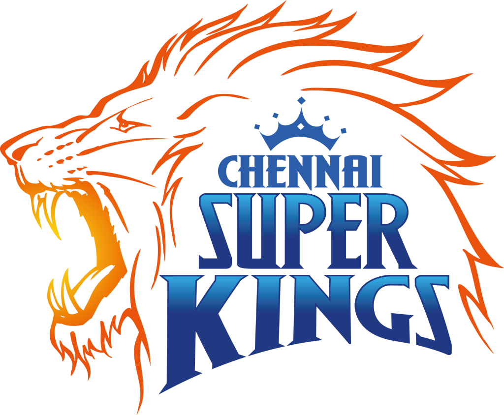

Chennai super kings

Delhi Capitals

The Indian Premier League (IPL) is a professional league for Twenty20 cricket championship in India. It was initiated by the Board of Control for Cricket in India (BCCI), headquartered in Mumbai,INDIA Additional Information The Indian Premier League is generally considered to be the world's showcase for Twenty20 cricket, a shorter format of cricket consisting only 20 overs. Top Indian and international players take part in IPL, contributing to what is the world's "richest cricket tournament"
You’ve heard the chant. You may not have heard of the sport, but you’ve heard the chant. The chant - one that a billion people once lived by; one that would originate from the Wankhede and echo across the city and the seas. It is a name that continues to inspire many, not only in India, but all over the world, to take up the sport. Sachin Ramesh Tendulkar was that cricketer whose personality and aura upstaged any cricketing contest; yet he maintained that he wasn’t greater than than the game. To the people of India, the 5’5” giant of a man was much more than that. He was an emotion; a symbol of hope in a nation that revered him as nothing short of a God.